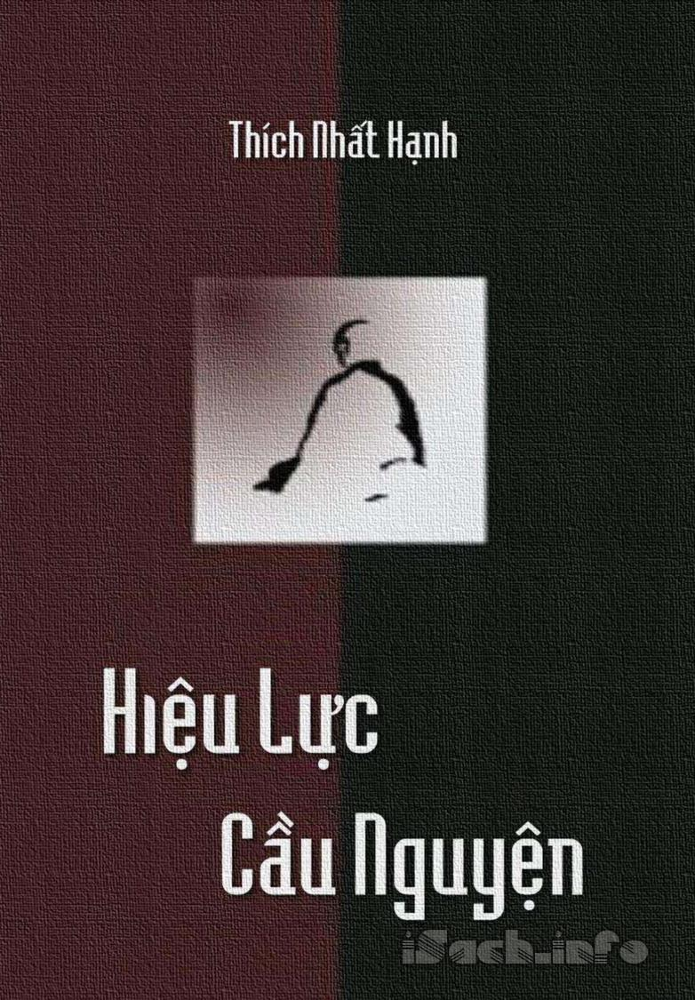

« Back
Hiệu Lực Cầu Nguyện
By Thích Nhất Hạnh

Phần 1: Đối Tượng Siêu Hình.
Những Nghi Vấn Khi Cầu Nguyện.
Ông Chỉ Nói Có Chừng Đó!.
Tự Lực Và Tha Lực Trong Cầu Nguyện.
Ta Nên Tự Hỏi Tụng Kinh Để Làm Gì?.
Cầu Nguyện Cho Mình.
Cầu Nguyện Cho Người.
Thiết Lập Sự Giao Cảm.
Năng Lượng Tu Tập.
Nghiệp Báo Và Sự Cầu Nguyện.
Ba Điều Cầu Nguyện Thông Thường.
Chúng Ta Phải Biết Rằng Cái Bệnh Và Cái Chết Là Một Phần Của Sự Sống.
Điều Cầu Nguyện Của Người Tu.
Phần 2: Cầu Đối Tượng Hiện Hữu.
Cầu Nguyện Trong Đạo Ki:Tô.
Phần 3: Vai Trò Của Cầu Nguyện Trong Y Khoa.
Tiến Trình Của Y Khoa.
Y Khoa Cơ Giới.
Y Khoa Thân Tâm.
Y Khoa Cộng Nghiệp.
Phần 4: Thiền Và Trị Liệu.
Vài Hiểu Biết Căn Bản Về Thiền Và Trị Liệu:Niệm.
Niệm (Smrti), Định (Samadhi) Và Tuệ (Prajna) Là Những Năng Lượng Chế Tác Ra Do Sự Thực Tập Thiền.
Kết Sử.
Mạn.
Tàng Thức.
Sự Lưu Thông Của Tâm Hành.
Mũi Tên Thứ Hai.
Tai Họa Của Dục.
Vài Bài Tập Có Công Năng Nuôi Dưỡng Và Trị Liệu.
Phần 5: Lời Kết.